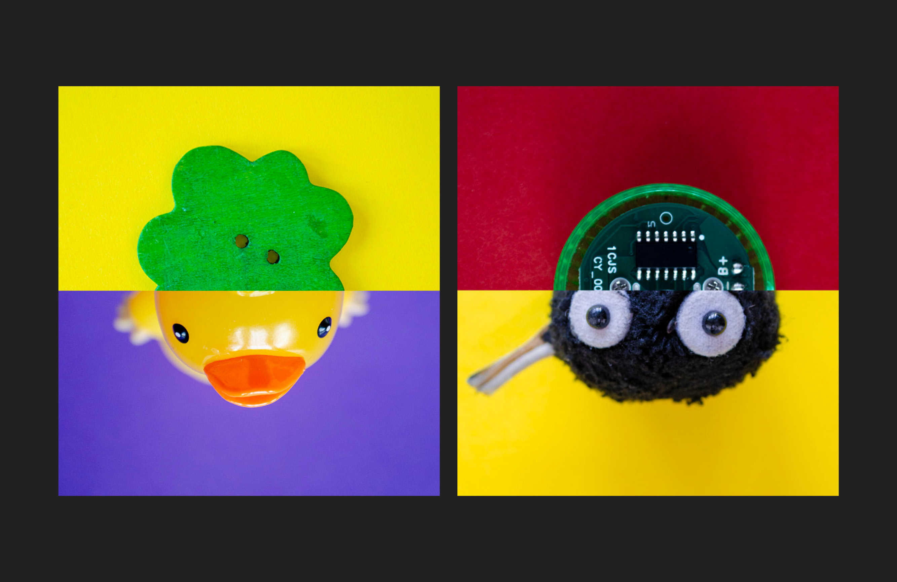

Objets croisés
Photomontage
Technique : Photographie numérique
Petit projet autour du thème des « Objets croisés », associant prises de vue personnelles et photomontage. L’assemblage d’éléments aux formes et aux univers différents crée des compositions inattendues et amusantes.
